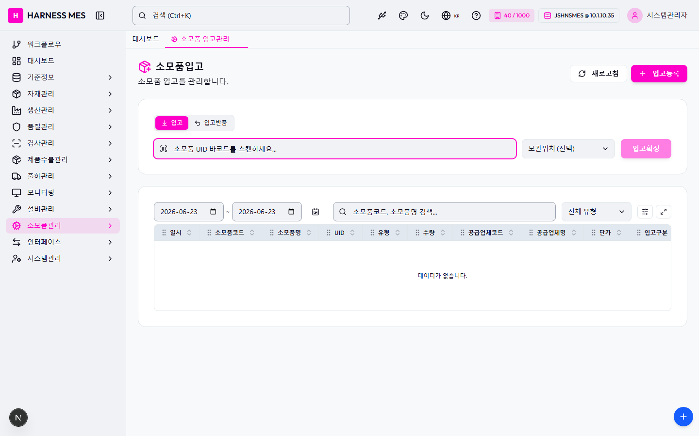

Route: /consumables/receiving
Status: PASS / HTTP 200
| 기능/버튼 | 처리 방식 | 상태 | 비고 |
|---|---|---|---|
| 화면 로드 | GET /consumables/receiving | 실행 | HTTP 200 |
| 라우트 prewarm | 직접 HTTP 확인 | 실행 | HTTP 200, 216ms |
| 초기 API 호출 | 브라우저 네트워크 수집 | 실행 | 12건 |
| 🇰🇷 | 화면 버튼 목록화 | 목록화 | 후속 메뉴별 세부 시나리오 실행 대상 |
| 시스템관리자 | 화면 버튼 목록화 | 목록화 | 후속 메뉴별 세부 시나리오 실행 대상 |
| 워크플로우 | 화면 버튼 목록화 | 목록화 | 후속 메뉴별 세부 시나리오 실행 대상 |
| 대시보드 | 화면 버튼 목록화 | 목록화 | 후속 메뉴별 세부 시나리오 실행 대상 |
| 기준정보 | 화면 버튼 목록화 | 목록화 | 후속 메뉴별 세부 시나리오 실행 대상 |
| 자재관리 | 화면 버튼 목록화 | 목록화 | 후속 메뉴별 세부 시나리오 실행 대상 |
| 생산관리 | 화면 버튼 목록화 | 목록화 | 후속 메뉴별 세부 시나리오 실행 대상 |
| 품질관리 | 화면 버튼 목록화 | 목록화 | 후속 메뉴별 세부 시나리오 실행 대상 |
| 검사관리 | 화면 버튼 목록화 | 목록화 | 후속 메뉴별 세부 시나리오 실행 대상 |
| 제품수불관리 | 화면 버튼 목록화 | 목록화 | 후속 메뉴별 세부 시나리오 실행 대상 |
| 출하관리 | 화면 버튼 목록화 | 목록화 | 후속 메뉴별 세부 시나리오 실행 대상 |
| 모니터링 | 화면 버튼 목록화 | 목록화 | 후속 메뉴별 세부 시나리오 실행 대상 |
| 설비관리 | 화면 버튼 목록화 | 목록화 | 후속 메뉴별 세부 시나리오 실행 대상 |
| 소모품관리 | 화면 버튼 목록화 | 목록화 | 후속 메뉴별 세부 시나리오 실행 대상 |
| 인터페이스 | 화면 버튼 목록화 | 목록화 | 후속 메뉴별 세부 시나리오 실행 대상 |
| 시스템관리 | 화면 버튼 목록화 | 목록화 | 후속 메뉴별 세부 시나리오 실행 대상 |
| 소모품 입고관리 | 화면 버튼 목록화 | 목록화 | 후속 메뉴별 세부 시나리오 실행 대상 |
| 새로고침 | 화면 버튼 목록화 | 목록화 | 후속 메뉴별 세부 시나리오 실행 대상 |
| 입고등록 | 화면 버튼 목록화 | 목록화 | 후속 메뉴별 세부 시나리오 실행 대상 |
| 입고 | 화면 버튼 목록화 | 목록화 | 후속 메뉴별 세부 시나리오 실행 대상 |
| 입고반품 | 화면 버튼 목록화 | 목록화 | 후속 메뉴별 세부 시나리오 실행 대상 |
| 입고확정 | 화면 버튼 목록화 | 목록화 | 후속 메뉴별 세부 시나리오 실행 대상 |
| 전체화면 보기 | 화면 버튼 목록화 | 목록화 | 후속 메뉴별 세부 시나리오 실행 대상 |
| AI 채팅 | 화면 버튼 목록화 | 목록화 | 후속 메뉴별 세부 시나리오 실행 대상 |
| 개선요청 등록 | 화면 버튼 목록화 | 목록화 | 후속 메뉴별 세부 시나리오 실행 대상 |
| 입력 필드 | DOM 수집 | 목록화 | 5개 |
| 선택 필드 | DOM 수집 | 목록화 | 2개 |
| 목록/그리드 | DOM 수집 | 목록화 | table 1, grid 0 |
| Method | URL | Status | OK |
|---|---|---|---|
| GET | /api/health | 200 | OK |
| GET | /api/db-info | 200 | OK |
| GET | /api/health | 200 | OK |
| GET | /api/db-info | 200 | OK |
| GET | /api/system/comm-configs?commType=SERIAL&useYn=Y | 200 | OK |
| GET | /api/auth/me | 200 | OK |
| GET | /api/system/configs/active | 200 | OK |
| GET | /api/menu-categories/tree | 200 | OK |
| GET | /api/consumables/logs?logTypeGroup=RECEIVING&startDate=2026-06-23&endDate=2026-06-23&limit=5000 | 200 | OK |
| GET | /api/consumables/label/pending | 200 | OK |
| GET | /api/inventory/warehouse-locations | 200 | OK |
| GET | /api/master/com-codes/all-active | 200 | OK |
requestfailed: GET /api/db-info net::ERR_ABORTED requestfailed: GET https://fonts.gstatic.com/s/outfit/v15/QGYvz_MVcBeNP4NJtEtq.woff2 net::ERR_ABORTED

H HARNESS MES 🇰🇷 40 / 1000 JSHNSMES @ 10.1.10.35 시스템관리자 워크플로우 대시보드 기준정보 자재관리 생산관리 품질관리 검사관리 제품수불관리 출하관리 모니터링 설비관리 소모품관리 인터페이스 시스템관리 대시보드 소모품 입고관리 소모품입고 소모품 입고를 관리합니다. 새로고침 입고등록 입고 입고반품 보관위치 (선택) DEF-01 - 불량품 1번 DEF-02 - 불량품 2번 FG-A-01-01 - 완제품 A구역 1열 1단 FG-A-01-02 - 완제품 A구역 1열 2단 FG-A-02-01 - 완제품 A구역 2열 1단 FG-B-01-01 - 완제품 B구역 1열 1단 FGM-A-01 - 완제품메인 A-01 FGM-A-02 - 완제품메인 A-02 FGM-B-01 - 완제품메인 B-01 MAT-A-01-01 - 자재A 1열 1단 MAT-A-01-02 - 자재A 1열 2단 MAT-A-01-03 - 자재A 1열 3단 MAT-A-02-01 - 자재A 2열 1단 MAT-A-02-02 - 자재A 2열 2단 MAT-B-01-01 - 자재B 1열 1단 MAT-B-01-02 - 자재B 1열 2단 MAT-B-02-01 - 자재B 2열 1단 RM-A-01-01 - 원자재 A구역 1열 1단 RM-A-01-02 - 원자재 A구역 1열 2단 RM-A-02-01 - 원자재 A구역 2열 1단 RM-B-01-01 - 원자재 B구역 1열 1단 RM-SUB-01 - 원자재 서브 1번 RM-SUB-02 - 원자재 서브 2번 SCRAP-01 - 폐기 1번 SHIP-01 - 출하대기 1번 SHIP-02 - 출하대기 2번 SHIP-03 - 출하대기 3번 SUB-01 - 외주 1번 SUB-02 - 외주 2번 W001-A-01-01 - 원자재창고 A구역 1열 1단 W001-A-01-02 - 원자재창고 A구역 1열 2단 W001-A-02-01 - 원자재창고 A구역 2열 1단 W001-A-02-02 - 원자재창고 A구역 2열 2단 W001-B-01-01 - 원자재창고 B구역 1열 1단 W001-B-01-02 - 원자재창고 B구역 1열 2단 WIP-A-01 - 반제품 A-01 WIP-A-02 - 반제품 A-02 WIP-B-01 - 반제품 B-01 입고확정 ~ 전체 유형 입고 입고반품 일시 소모품코드 소모품명 UID 유형 수량 공급업체코드 공급업체명 단가 입고구분 비고 데이터가 없습니다. 전체화면 보기 AI 채팅 개선요청 등록